방송통신산업기사 (2021-03-13 기출문제)
1과목: 디지털 전자회로
1. 다음 정류회로에서 직류출력 전압(Vdc)과 직류출력 전류(ldc)는 얼마인가? (단, Vi=141sin377t[V], R=500[Ω], n1:n2=10:1, 다이오드 전압 강하는 없다.)
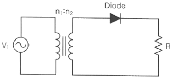
- Vdc=4.5[V], ldc=0.9[mA]
- Vdc=45[V], ldc=9[mA]
- Vdc=4.5[V], ldc=9[mA]
- Vdc=45[V], ldc=0.9[mA]
(정답률: 75%)

2. 다음 중 평활회로의 필터에 대한 설명으로 틀린 것은?
- 반파, 전파 정류회로를 통해 출력되는 맥동류의 교번적인 영향을 줄여 거의 일정한 레벨의 직류를 생성한다.
- 정류회로의 출력 성분 중 리플을 제거하기 위해 정류회로 다음 단에 접속한다.
- 커패시터와 인덕터의 조합으로 구성한다.
- 출력직류전압들을 합하여 입력교류전압보다 최소 2배 이상의 정류효과를 생성한다.
(정답률: 60%)
3. 전원회로에서 부하에 최대전력을 공급하기 위해서는 어떻게 하여야 하는가?
- 전원내부저항과 부하저항이 같아야 한다.
- 전원내부저항보다 부하저항이 커야 한다.
- 전원내부저항보다 부하저항이 작아야 한다.
- 전원내부저항보다 부하저항이 크거나 작아야 한다.
(정답률: 80%)
4. 다음 중 저주파에서 고주파에 이르기까지 일정한 스펙트럼을 갖고 나타나는 잡음으로 알맞은 것은?
- 트랜지스터 잡음
- 자연 잡음
- 백색 잡음
- 지터 잡음
(정답률: 80%)
5. 다음 중 다단 증폭기 출력단에 연결하여 증폭기이 전체 출력저항을 낮추는데 사용하는 회로는?
- 공통드레인 증폭기
- 공통소스 증폭기
- 공통게이트 증폭기
- 공통이미터 증폭기
(정답률: 73%)
6. 다음 중 궤환 증폭기의 특성에 관한 설명으로 틀린 것은?
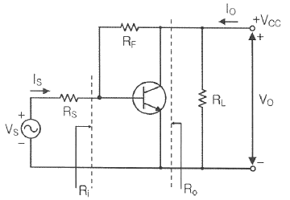
- 궤환으로 입력 임피던스 Ri는 감소한다.
- 궤환으로 출력 임피던스 Ro는 감소한다.
- 궤환으로 전류이득 Io/Is는 감소한다.
- RF가 작을수록 출력전압 VO는 커진다.
(정답률: 91%)
7. 다음 회로에서 삼각파 입력에 대한 출력의 파형으로 맞는 것은?
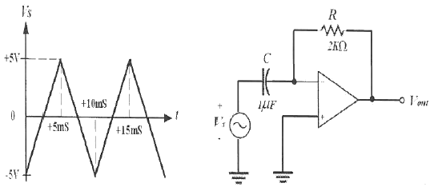
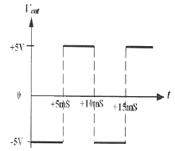
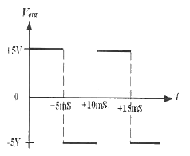
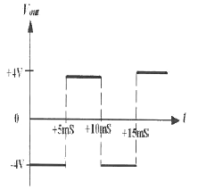
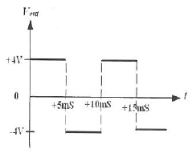
(정답률: 알수없음)
8. 증폭도가 A인 증폭기에 궤환율 β로 정궤환 되었을 경우 발진이 이루어지는 조건은?
- Aβ=1
- Aβ=0
- Aβ＞1
- Aβ＜1
(정답률: 70%)
9. 다음 발진기에서 자가 발진을 위한 전압이득 AV의 조건은?
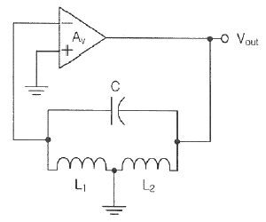
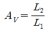
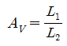
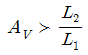
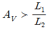
(정답률: 50%)
10. 다음의 위상 이동 발진기 회로에서 발진이 지속적으로 유지하기 위한 Rf값과 발진기의 출력주파수(Vout)는 약 얼마인가?
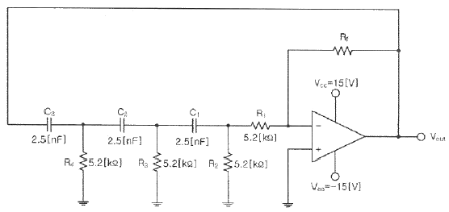
- 15.6[kΩ], 1[kHz]
- 31.2[kΩ], 3[kHz]
- 114.4[kΩ], 4[kHz]
- 150.8[kΩ], 5[kHz]
(정답률: 55%)
11. 다음 중 변조의 목적이 아닌 것은?
- 안테나의 길이를 줄일 수 있다.
- 잡음 및 간섭의 영향을 적게 받는다.
- 주파수 분할의 다중통신을 할 수 있다.
- 송신 전력을 일정하게 유지할 수 있다.
(정답률: 알수없음)
12. 다음 중 AM변조방식에서 변조도에 대한 설명으로 틀린 것은?
- 신호파의 최대값을 반송파의 최대값으로 나눈 값이다.
- 반송파의 크기와 신호파의 크기에 따라 정해진다.
- 최대주파수편이와 신호주파수와의 비이다.
- 진폭변화의 정도를 나타낸다.
(정답률: 70%)
13. 다음 중 PCM에서 미약한 신호는 진폭을 크게하고 진폭이 큰 신호는 진폭을 줄이는 기능을 무엇이라 하는가?
- 프리엠퍼시스(Pre-emphasis)
- 압신(Companding)
- 디엠퍼시스(De-emphasis)
- FM 복조시스이 리미팅(Limiting)
(정답률: 알수없음)
14. 900[kHz]의 반송파를 5[kHz]의 신호주파수로 진폭 변조한 경우 피변조파에 나타나는 주파수 성분이 아닌 것은?
- 895[kHz]
- 900[kHz]
- 9⑤[kHz]
- 910[kHz]
(정답률: 91%)
15. 다음 회로에서 입력되는 정현파의 최대 진폭이 6[V]일 때 출력에 나타나는 최대 진폭은? (단, RS=200[Ω], RL=400[Ω]이다.)
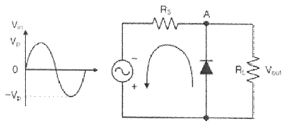
- 2[V]
- 4[V]
- 6[V]
- 8[V]
(정답률: 알수없음)
16. R-L 직렬 회로에서 시정수(Time Constant) τ는 어떻게 정의되는가?
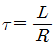
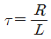
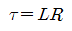
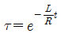
(정답률: 55%)
17. 다음 중 십진수 45를 그레이코드로 바꾼 것은?
- 111011
- 011011
- 110111
- 110011
(정답률: 70%)
18. 수신측에 다음과 같은 해밍코드가 수신되었다. 몇 번째 비트에서 에러가 발생되었는가? (단, P는 패리티 비트, D는 데이터 비트이다.)
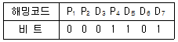
- 3번째
- 5번째
- 6번째
- 7번째
(정답률: 80%)
19. J-K 플립플롭 2개로 동기식 4진 카운터를 설계할 때, 각 플립플롭의 JK 입력 조건을 바르게 나타낸 것은?
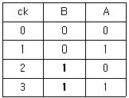
- JA=KA=1, JB=KB=QA
- JA=KA=1, JB=QA, KB=
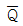
A - JA=KA=QB, JB=KB=QA
- JA=QB, KA=
 A, JB=QA, KB=QA
A, JB=QA, KB=QA
(정답률: 64%)
20. 다음 진리표의 카르노 맵(Karnaugh Map)을 작성한 것 중 가장 옳은 것은?
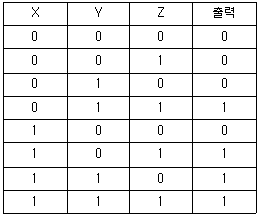
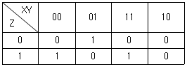
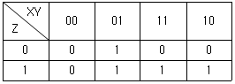
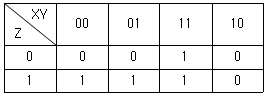
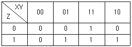
(정답률: 84%)
2과목: 방송통신 기기
21. 방송장비 중 CCU에 대한 설명으로 옳은 것은?
- 여러 개의 영상신호 가운데 하나의 신호를 선택하는 장비이다.
- 연주소에서 송신소로 방송신호를 보내는 장비이다.
- 그림이나 문자를 발생하는 컴퓨터 장비이다.
- 카메라를 컨트롤하는 장비이다.
(정답률: 91%)
22. 다음 방송장비 중 비디오 신호와 오디오 신호를 합하여 하나의 임베디드(Embeded)된 신호로 만들어 주는 장비는?
- ADA (Audio Distribution Amplifier)
- VDA (Video Distrivution Amplifier)
- MUX (Multiplexer)
- DOWN-CONVERTER
(정답률: 80%)
23. 방송프로그램 제작 설비 중 여러 가지 오디오 소스 입력들의 레벨과 음색을 조정하고 효과를 더한 다음 합성하여 출력하는 장치를 무엇이라 하는가?
- 믹싱 콘솔 (Mixing Console)
- 효과기 (Effecter)
- 패치 패널 (Patch Panel)
- 인코더 (Encoder)
(정답률: 70%)
24. 텔레비전 방송 프로그램을 편성순서에 따라 송신소나 다른 방송국으로 송출하는 역할을 하는 곳은?
- 스튜디오
- 부조정실
- 주조정실
- 종합편집실
(정답률: 80%)
25. 다음 중 초단파(VHF)의 주요 용도가 아닌 것은?
- AM라디오 방송
- DMB 방송
- FM라디오 방송
- 육상이동통신
(정답률: 60%)
26. FM 수신기에서 AFC회로가 사용되는 주된 이유는?
- 국부발진주파수를 제어하기 위해
- 감도를 조정하기 위해
- 선택도를 높이기 위해
- 감도를 높이기 위해
(정답률: 67%)
27. 진폭변조(AM)에서 변조신호의 진폭이 반송파신호 진폭의 50[%]인 경우 변조도는 얼마인가?
- 33[%]
- 50[%]
- 67[%]
- 100[%]
(정답률: 50%)
28. FM 스테레오 방송에서 매트릭스 회로를 사용하여 좌측(L)과 우측(R)신호의 합과 차의 신호를 전송하는 이유는?
- 모노형 수신기와의 호환성을 위하여
- 송신 전력 효율을 증대시키기 위하여
- 수신기 복조 회로를 간편하게 하기 위하여
- 전송대역폭을 줄이기 위하여
(정답률: 59%)
29. 다음 중 디지털 변복조 방식에 대한 설명으로 틀린 것은?
- ASK는 디지털신호에 각각 다른 진폭을 대응시키는 방식이다.
- ASK의 신호대 잡음비는 PSK보다 나쁘다.
- FSK는 디지털신호에 각각 다른 위상을 대응시키는 방식이다.
- QAM방식은 반송파의 진폭과 위상을 동시에 변조하는 방식이다.
(정답률: 84%)
30. HDTV의 화면비로 맞는 것은?
- 4:3
- 10:5
- 16:9
- 16:16
(정답률: 80%)
31. 다음 중 CATV에 대한 설명으로 잘못된 것은?
- 원래 난시청지역 해소를 목적으로 한 지역사회 안테나 텔레비전(community antenna television) 개념으로 시작되었다.
- 자주방송(自主放送) 및 지역사회 정보를 제공하는 매체로 발전하면서 Cable Television으로 불리게 되었다.
- 유·무선 전송매체를 이용하여 영상, 음성, 데이터를 다수의 수신자에게 제공하는 단채널 방송이다.
- 초기에는 단방향이었으나 1990년대 이후 쌍방향으로 변화되었다.
(정답률: 77%)
32. 위성방송의 전파세기를 나타내는 전력속밀도의 단위는?
- dBW/m2
- dBmW/m3
- dBiW/m2
- dBiW/m3
(정답률: 60%)
33. 디지털 영상신호 중 HDTV스튜디오 규격으로 색차신호의 표본화 주파수는 얼마인가?
- 6.75[MHz]
- 13.5[MHz]
- 37.125[MHz]
- 74.25[MHz]
(정답률: 30%)
34. 인공위성을 이용한 3각 측량원리를 사용하여, 현재의 위치 및 시간을 추적하는 위성항법 시스템은?
- VSAT(Very Small Aperture Terminal)
- DR(Dead Reckoning) 추측항법
- GPS(Global Positioning System)
- DBS(Direct Broadcasting System)
(정답률: 80%)
35. 위성 채널에서 발생하는 진폭 및 위상의 왜곡을 보상하는 것은?
- 채널부호화기
- 주파수변환기
- 등화기
- 비콘수신기
(정답률: 64%)
36. 영상표준신호를 만들고 시험과 조정절차를 위해 사용되는 것은?
- 웨이브폼 모니터
- 컬러바 발생기
- 벡터스코프
- 정현파 발생기
(정답률: 알수없음)
37. 다음 중 방송국 송신기에 관한 측정사항이 아닌 것은?
- 공중선의 효율
- 송신기의 효율
- 주파수 허용편차
- 페데스털 레벨의 변동
(정답률: 82%)
38. 방송기기의 조정이나 시험시 사용되는 더미안테나에 대하여 요구되는 전압정재파비는 최소한 얼마 이하가 되어야 하는가?
- 0.8
- 1.1
- 1.5
- 2.5
(정답률: 73%)
39. 다음 중 송신기에서 부하변동에 따른 주파수의 변동을 방지하기 위하여 사용하는 회로는?
- 발진 증폭부
- 완충 증폭부
- 주파수 체배기
- 전력 증폭기
(정답률: 55%)
40. AM 송신기의 출력이 10[W]인 경우 이것을 [dBm]으로 표시하면?
- 10[dBm]
- 30[dBm]
- 40[dBm]
- 50[dBm]
(정답률: 70%)
3과목: 방송미디어 개론
41. 다음 중 우리나라의 디지털 TV 전송방식은?
- NTSC
- ATSC
- ISDB-T
- DVB-T
(정답률: 64%)
42. 다음 중 방송 관련 용어의 설명으로 틀린 것은?
- 방송설비는 제작설비, 편집설비, 송출설비, 수신설비로 구성된다.
- 방송국은 연주소와 송신소가 합쳐져서 프로그램을 제작하여 송신하는 기능을 가진다.
- 연주소와 송신소가 다른 장소에 설치되어 있을 때 연주소와 송신소간의 링크를 STL이라 한다.
- 전파란 3,000[MHz] 이하 주파수의 전자파를 말한다.
(정답률: 알수없음)
43. ATSC 3.0 UHDTV(4K)의 해상도는?
- 720×480
- 1920×1080
- 3840×2160
- 7680×4320
(정답률: 알수없음)
44. AM 방송과 비교하여 FM 방송의 특징을 적절하게 설명한 것은?
- 중파 라디오 방송보다 전파 도달 거리가 멀다.
- 주파수 대역을 좁게 차지한다.
- 중파 라디오 방송보다 음질이 좋다.
- 잡음에 약하다.
(정답률: 64%)
45. 다음 중 우리나라 지상파 TV 또는 라디오 방송의 변조 방식이 아닌 것은?
- AM
- FM
- 8VSB
- PM
(정답률: 알수없음)
46. 소리의 3요소가 아닌 것은?
- 소리의 높이
- 소리의 크기
- 소리의 속도
- 소리의 음색
(정답률: 60%)
47. 다음 중 청각매체에 해당되지 않는 것은?
- 음성
- 음악
- 자막
- 음향
(정답률: 82%)
48. 제작된 방송프로그램에 대사 녹음이나 효과음악 등을 재녹음하는 것을 무엇이라고 하는가?
- 다큐멘터리
- 더빙
- 나레이션
- 이벤트
(정답률: 알수없음)
49. 뉴미디어 분류체계 중 방송계에 포함되지 않는 매체는?
- AM 스테레오방송
- FM 다중방송
- CATV
- 영상전화
(정답률: 알수없음)
50. 44.1[kHz]의 Sampling 주파수로 16bit의 스테레오로 2분 동안 녹음하면 저장 공간은 대략 몇 [MByte]인가?
- 10.584
- 21.168
- 84.672
- 169.344
(정답률: 46%)
51. 유럽에서 사용중인 지상파 디지털방송(DVB-T)의 변조방식은?
- 직교주파수분할방식(OFDM)
- 잔류측파대 크기변조방식(VSB-AM)
- 단일 측파대 크기변조방식(SSB-AM)
- 시분할방식(TDM)
(정답률: 알수없음)
52. 우리나라에서 사용되는 지상파 DMB 방송의 비디오 압축방식은?
- H.261 / MPEG-2 Part10 AVC
- H.262 / MPEG-2 Part10 AVC
- H.263 / MPEG-4 Part10 AVC
- H.264 / MPEG-4 Part10 AVC
(정답률: 알수없음)
53. 다음 중 재난방송 주관방송사의 필요 조치 사항이 아닌 것은?
- 재난방송 등을 위한 인적·물적·기술적 기반 마련
- 노약자, 심신장애인 및 외국인 등 재난 취약계층을 고려한 재난 정보전달시스템 구축
- 정기적인 재난방송 등의 모의훈련 실시
- 도로, 철도에 재난방송 수신장비 설치 및 운용
(정답률: 90%)
54. 다음 중 우리나라의 데이터 방송 표준현황이 아닌 것은?
- 지상파: ACAP
- 위성: DVB-MHP
- 케이블: OCAP
- IPTV: DVB-ACAP
(정답률: 90%)
55. 디지털 데이터를 RF대로 변조하여 전송로로 송신 하거나 전송로의 RF 신호를 복조하여 디지털 신호로 수신하게 하는 장치는?
- A/D 변환기
- MODEM
- 디스크램블
- 직렬 유니트
(정답률: 64%)
56. 다음 중 방송중계시 많은 양을 전달할 때 유리하고, 중계소마다 증폭기가 필요 없으며 전파간섭도 생기지 않는 케이블은?
- 동축케이블
- 광케이블
- 전파케이블
- 쌍연식케이블
(정답률: 60%)
57. 다음의 변조방식 중 가장 많은 데이터를 전송할 수 있는 변조방식은 무엇인가?
- QPSK
- 8PSK
- 16QAM
- 64QAM
(정답률: 알수없음)
58. 다음 중 PCM 오디오의 기본개념에서 워드의 길이에 의해서 결정되는 것이 아닌 것은?
- SNR과 다이나믹 레인지
- 주파수 대역폭
- 왜곡(Distortion)
- 진폭
(정답률: 73%)
59. 샘플링 신호배율은 영상신호 중 휘도신호와 색차성분을 디지털화 할 때 사용한다. 다음 중 영상의 압축 및 전송 등에서 샘플링 규격에 해당되지 않는 것은?
- 4:1:1
- 4:2:2
- 4:3:2
- 4:4:4
(정답률: 70%)
60. IP중계망에서 같은 데이터를 동시에 다수 상대에게 송신하는 멀티캐스트를 실행하기 위해 사용하는 IP(Internet Protocol) 주소 체계는?
- 클래스A
- 클래스B
- 클래스C
- 클래스D
(정답률: 알수없음)
4과목: 전자계산기 일반 및 방송설비기준
61. 다음 중 2n개의 입력과 n 개의 출력으로 구성되는 것은?
- 인코더
- 디코더
- 멀티플렉서
- 디멀티플렉서
(정답률: 55%)
62. 다음 중 순차 액세스(Sequential Access)만 가능한 보조 기억장치는?
- CD-ROM
- 자기 디스크
- 자기 드럼
- 자기 테이프
(정답률: 80%)
63. 다음 중 비교적 속도가 빠른 I/O 장치를 통해 특정한 하나의 장치를 독점하여 입·출력으로 사용하는 채널은?
- Simple Channel
- Select Channel
- Byte Multiplexer Channel
- Block Multiplexer Channel
(정답률: 알수없음)
64. 다음 보기와 같은 기능을 수행하는 것은?
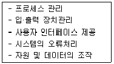
- 하드웨어
- 운영체제
- 응용 프로그램
- 미들웨어
(정답률: 알수없음)
65. 다음 중 “원하는 시간 내에 시스템을 얼마나 빨리 사용할 수 있는 가”의 정도를 나타내는 것은 무엇인가?
- 처리능력(Throughput)의 향상
- 응답시간(Turn-Around Time)의 단축
- 사용 가능도(Availability)의 향상
- 신뢰도(Reliability)의 향상
(정답률: 알수없음)
66. 현재 메모리의 분할 상태가 다음과 같을 때 크기가 100K인 작업을 최악적합(Worst Fit) 기법에 의해 할당한다면 어느 위치에 적재되는가?
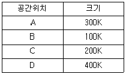
- A
- B
- C
- D
(정답률: 90%)
67. 다음 중 시스템 소프트웨어에 해당하는 것은?
- 문서작성용 소프트웨어
- 그래픽 편집기
- 윈도우즈(OS)
- 웹 어플리케이션
(정답률: 84%)
68. 다음 중 주소 지정 방식에 대한 설명으로 틀린 것은?
- 직접 주소 지정 방식보다 간접 주소 지정의 주소 범위가 더 넓다.
- 간접 주소 지정 방식은 두 번 이상 메모리에 접속해야 실제 데이터를 가져온다.
- 레지스터 간접 주소 지정 방식에서 레지스터 안에 있는 값은 실제 데이터가 있는곳의 주소를 나타낸다.
- 즉시(또는 즉치) 주소 지정 방식에서 오퍼랜드는 기억장치의 주소 값이다.
(정답률: 82%)
69. 다음 중 4-단계 명령어 파이프라이닝의 올바른 실행 순서는?
- 명령어 인출(IF)-명령어 해독(ID)-오퍼랜드 인출(OF)-실행(EX)
- 오퍼랜드 인출(OF)-실행(EX)-명령어 인출(IF)-명령어 해독(ID)
- 명령어 인출(IF)-실행(EX)-오퍼랜드 인출(OF)-명령어 해독(ID)
- 오퍼랜드 인출(OF)-명령어 해독(ID)-명령어 인출(IF)-실행(EX)
(정답률: 알수없음)
70. 논리식
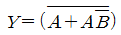
를 간략화하면?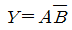
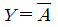
- Y=1
- Y=AB
(정답률: 84%)
71. 다음 중 무선분야 적합성평가 대상기자재로 옳지 않은 것은?
- 인터넷멀티미디어방송 가입자단말장치
- 육상이동국의 송수신장치
- 기지국의 송수신장치 및 중계장치
- 핸드오프용 채널변환 장치
(정답률: 알수없음)
72. 지상파 디지털방송용 무선설비에서 음성의 부호화 방식의 설명이 잘못된 것은?
- 음성신호의 표본화 주파수는 8[Hz]로 한다.
- 음성신호의 표본당 비트 수는 16 이상, 24 이하로 한다.
- 음성 채널의 수는 5.1 채널이다.
- 음성신호의 대역은 3[Hz] 이상, 20[kHz] 이하로 한다.
(정답률: 64%)
73. 방송채널사용사업자가 승인유효기간 만료 후 계속 방송을 행하고자 할 때 어떤 절차를 받아야 하는가?
- 과학기술정보통신부장관 또는 방송통신위원회의 재허가
- 과학기술정보통신부장관 또는 방송통신위원회의 재등록
- 과학기술정보통신부장관 또는 방송통신위원회의 재허가 추천
- 과학기술정보통신부장관 또는 방송통신위원회의 재승인
(정답률: 80%)
74. 지상파 디지털 텔레비전방송용 무선설비의 기술기준에서 변조된 신호의 채널당 주파수 대역폭은?
- 1[MHz]
- 4[MHz]
- 6[MHz]
- 12[MHz]
(정답률: 알수없음)
75. 방송사업자·중계유선방송사업자·전광판방송사업자 및 음악유선방송 사업자는 방송일지에 방송내용을 기록하여 비치하여야 하며, 특별한 사유가 없는 한 방송 실시결과를 방송 후 몇 개월 이내에 과학기술 정보통신부장관 또는 방송통신위원회에 제출하여야 하는가?
- 1개월
- 2개월
- 3개월
- 4개월
(정답률: 55%)
76. 다음은 지상파 디지털 텔레비전방송용 무선설비의 방송신호의 표현형식을 설명한 것이다. 괄호 안에 들어갈 알맞은 것은?
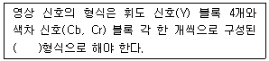
- 4:1:1
- 4:2:0
- 4:2:2
- 4:4:4
(정답률: 70%)
77. 다음 괄호 안에 들어갈 말로 알맞은 것은?
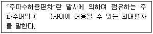
- 기준주파수와 지정주파수
- 특성주파수와 중심주파수
- 중심주파수와 지정주파수
- 중심주파수와 기준주파수
(정답률: 알수없음)
78. 케이블·접속커넥터·분배기·분기기·중계장치·증폭장치 등 유선방송신호를 전송하는데 필요한 전송설비와 선로설비를 무엇이라 하는가?
- 전송선로설비
- 주전송장치
- 유선방송국설비
- 유선방송설비
(정답률: 80%)
79. 지상파 디지털 텔레비전방송용 무선설비의 기술기준에서 음성 부호화 기본 알고리즘으로 사용하는 방식은?
- MPEG-2방식
- MPEG-3방식
- MPEG-4방식
- AC-3(돌비디지털)방식
(정답률: 알수없음)
80. 방송프로그램의 편성 등에 대한 설명으로 틀린 것은?
- 방송사업자는 방송프로그램을 편성함에 있어 공정성·공공성·다양성·균형성·사실성등에 적합하도록 하여야 한다.
- 종합편성을 행하는 방송사업자는 정치·경제·사회·문화 등 각 분야의 사항이 균형있게 표현될 수 있도록 하여야 한다.
- 종합편성을 행하는 방송사업자는 주시청시간대에는 보도에 관한 방송프로그램이 편중되도록 편성할 수 있다.
- 전문편성을 행하는 방송사업자는 허가를 받거나 승인을 얻거나 등록을 한 주된 방송분야가 충분히 반영될 수 있도록 방송프로그램을 편성하여야 한다.
(정답률: 80%)
정류회로에서 R에 가해지는 최대 전압은 다음과 같이 구할 수 있다.
Vmax = (n1/n2)Vimax = (10/1) x 141[V] = 1410[V]
R에 가해지는 최대 전압이 141[V]이므로, 다이오드가 전류를 차단하는 구간에서 R에 가해지는 전압은 0[V]이다. 따라서, R에 가해지는 전압의 평균값은 다음과 같다.
Vdc = (1/π) ∫0π Vmax sin(ωt) dt = (1/π) x Vmax x [-cos(ωt)]0π = Vmax/π = 1410/π[V] ≈ 449.3[V] ≈ 4.5[V]
R에 가해지는 최대 전압이 141[V]이므로, R에 가해지는 최대 전류는 다음과 같다.
lmax = Vmax/R = 141[V]/500[Ω] = 0.282[A] ≈ 282[mA]
다이오드가 전류를 차단하는 구간에서 R에 가해지는 전류는 0[A]이므로, R에 가해지는 전류의 평균값은 다음과 같다.
ldc = (1/π) ∫0π lmax sin(ωt) dt = (1/π) x lmax x [-cos(ωt)]0π = lmax/π = 0.282/π[A] ≈ 0.0899[A] ≈ 89.9[mA]
따라서, 정답은 "Vdc=4.5[V], ldc=0.9[mA]"가 아니라 "Vdc=4.5[V], ldc=9[mA]"이다.